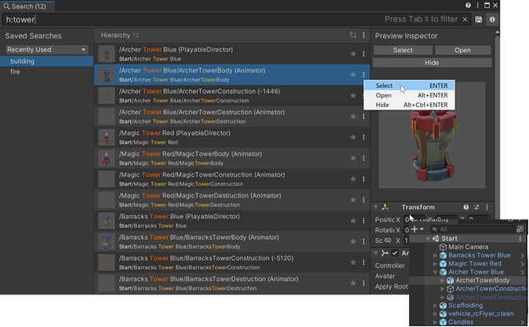

Use the Hierarchy Search Provider to find GameObjects in the current Scene.
Hierarchy queries run on all objects of the current scene. For this search, Unity uses progressive caching, not indexed data (as opposed to Asset and Objects providers).
From the More(⋮) menu, select Show more results to enable “fuzzy” search in the Hierarchy Search Provider. Fuzzy searches are more resource intensive than direct searches, but usually return more matches. They can be slower in larger Scenes and may cause a lag.
Search token: h: (for “hierarchy”)
Default action: Select the GameObject in the Scene.
| Action: | 功能： |
|---|---|
| Select | Selects the GameObject in the Scene and the Hierarchy window. |
| Open | Opens the Project Asset that contains the GameObject. |
| Hide/Show | Hides/Shows the GameObject in the Scene view. |

Hierarchy Search Provider
Use these tokens to further limit your Hierarchy searches.
| Filter | Search token | 描述 |
|---|---|---|
| Component type | t: |
t:collid Searches all GameObjects that have a component containing the word collid (ex: Collider, Collider2d, MyCustomCollider). |
| Instance id | id: |
id :210 Searches all GameObjects whose instanceID contains the word 210 (ex: 21064). id=21064 Searches all GameObjects whose instanceID is exactly 21064. |
| 路径 | path:parent/to/child |
path:Wall5/Br Searches all GameObjects whose path matches the partial path Wall5/Br (e.g.: /Structures/Wall5/Brick)path=/Structures/Wall5/Brick Searches all GameObjects with a scene path that is exactly /Structures/Wall5/Brick. |
| 标签 | tag: |
tag:resp Searches all GameObjects that have a tag containing the word resp (e.g.: Respawn) |
| Layer | layer:<layer number> |
layer:8 Searches all GameObjects that are on layer 8 (e.g.: 8: Terrain) |
| Size | size:number |
size>5 Searches all GameObjects with an AABB volume size larger than 5. |
| Overlap | overlap:number |
overlap>3 Searches all GameObjects that renderer bounds intersects with more than 3 other GameObjects. |
| 依赖关系 | ref:<asset name> |
ref:stone Searches all GameObjects and their components that have a dependency on an asset whose name contains the word stone |
| Child | is:child |
is:child Searches all GameObjects that are the child of a GameObject. |
| Leaf | is:leaf |
is:leaf Searches all GameObjects that don’t have a child. |
| Root | is:root |
is:root Searches all GameObjects that don’t have a parent (i.e. that root objects in the scene). |
| Visible | is:visible |
is:visible Searches all GameObjects that are visible by the camera of the Scene View. |
| Hidden | is:hidden |
is:hidden Searches all GameObjects that are hidden according to the SceneVisibilityManager. |
| Static | is:static |
is:static Searches all GameObjects that are static. |
| Prefab | is:prefab |
is:prefab Searches all GameObjects that are part of a Prefab. |
You can use the special p(<partial propertyname>) syntax to filter objects according to the value of a property in order to match the partial name of the property against any of the components of an object. This is a dynamic operation that doesn’t use an index. Here are some examples of queries using p():
p(drawmode)=Simple |
Matches the drawmode property of a Sprite renderer. |
p(orthographic size)>2 |
Matches a Camera with an orthographic size higher than 2. |
p(istrigger)=false |
Matches all GameObjects where the IsTrigger property in a Collider2d is NOT a trigger. |
p(sprite)=bee |
Matches all GameObjects with a Sprite property (e.g.: Sprite Renderer) that links to an Asset whose name is exactly bee. |
p(sprite):bee |
Matches all GameObjects with a Sprite property (e.g.: Sprite Renderer) that links to a GameObject with a name containing the word bee. |
p(spri):bee |
Matches all GameObjects with a property containing the word spri (such as the Sprite property of a Sprite Renderer component) that links to a GameObject Asset with a name containing the word bee. |
Unity indexes property names according to their internal name, which might be different than the display name in the Inspector. To find the internal name of a property, check the Inspector in Debug mode.